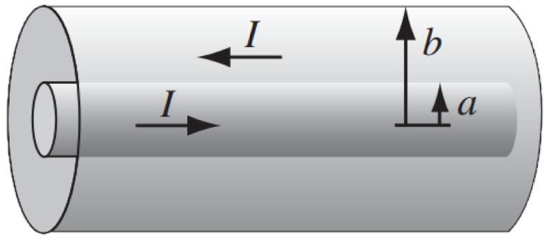

A coaxial cable consists of two very long cylindrical tubes, separated by linear insulating material of magnetic susceptibility $\chi _m $.
A current $I $ flows down the inner conductor and returns along the outer one; in each case, the current distributes itself uniformly over the surface (Fig. 6.24).
Find the magnetic field in the region between the tubes.
As a check, calculate the magnetization and the bound currents, and confirm that (together, of course, with the free currents) they generate the correct field.
An amperian loop around the central axis will give us:
\[\mathbf{H}=\frac{I}{2\pi s}\hat{\phi } \]Now that we know $\mathbf{H} $, knowing $\mathbf{B} $ is straight forward. Recall
\[\mathbf{B}=\mu \mathbf{H}\tag{6.31} \]Where
\[\mu \equiv \mu _0 (1+\chi _m)\tag{6.32} \]Then
\begin{align*} \mathbf{B} &= \mu _0 (1+\chi _m)\mathbf{H} \\ &= \mu _0 (1+\chi _m) \frac{I}{2\pi s}\hat{\phi } \end{align*}That's it, we have the field. To show that the old methods give the same answer, we need to know what $\mathbf{M} $ is. For linear media (as in this problem), we have:
\begin{align*} \mathbf{M} &= \chi _m \mathbf{H}\tag{Eq. 6.29} \\ &= \chi _m \frac{I}{2\pi s}\hat{\phi } \end{align*}By recalling
\begin{align*} \text{Volume} \;\;\; \mathbf{J}_b &= \nabla \times \mathbf{M} \\ \text{Surface} \;\;\; \mathbf{K}_b &= \mathbf{M}\times \hat{\mathbf{n}} \end{align*}It is straightforward to show that the volume current density vanishes:
\begin{align*} \mathbf{J}_b &= \nabla \times \mathbf{M} \\ &= \frac{1}{s}\frac{\partial }{\partial s} \left( sM \right) \hat{z} \\ &= \mathbf{0} \end{align*}And we have 2 surface current densities to take care of: one at $s=a $:
\[\mathbf{K}_b ^{\text{at $s=a $} }= \frac{\chi _mI}{2\pi a}\hat{z} \]And one at $s=b $:
\[\mathbf{K}_b ^{\text{at $s=b $} }= -\frac{\chi _mI}{2\pi b}\hat{z} \]Notice, of course, the sign in the the last one. The total current enclosed is $I $ plus that from the surface current density of the smaller cylinder, so:
\[I_{\text{enc } }=I+I\frac{\chi _m}{2\pi a}\cdot (\text{circumference} )= \] \begin{align*} I_{\text{enc } } &= I+I\frac{\chi _m}{2\pi a}\cdot (\text{circumference} ) \\ &= I+I\frac{\chi _m}{2\pi a}2\pi a\\ &= I(1+\chi _m) \end{align*}Using an amperian loop co-centered with the cylinders:
\begin{align*} B &= \frac{1}{2\pi s}\mu _0 I_{\text{enc} } \\ &= \mu _0 (1+\chi _m) \frac{I}{2\pi s} \end{align*}That is
\[\mathbf{B}= \mu _0 (1+\chi _m) \frac{I}{2\pi s}\hat{\phi } \]As before!